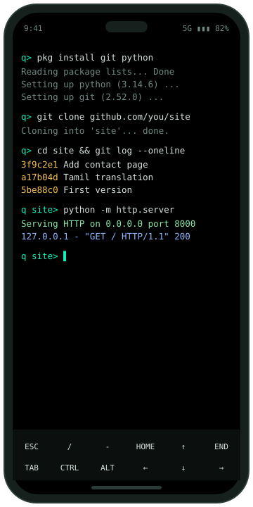
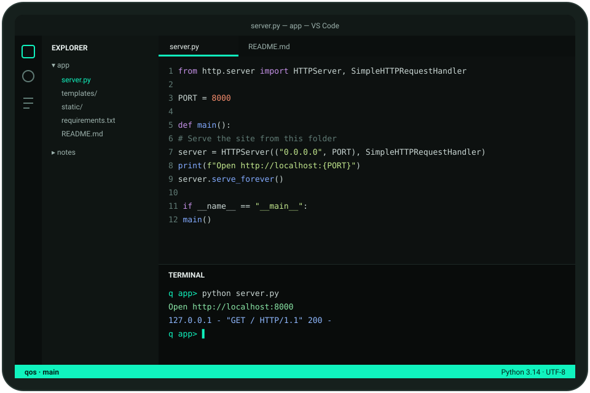
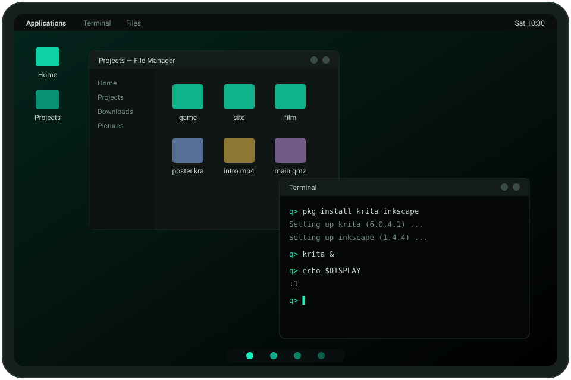
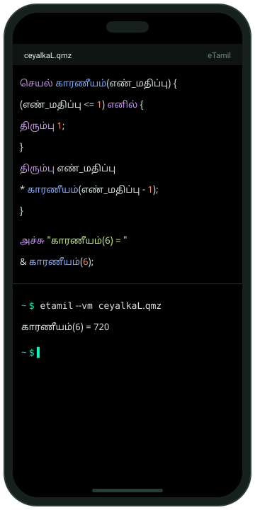

Features
Everything a development machine needs
A Linux terminal, real compilers, VS Code, a desktop and eTamil, in one app on your phone or tablet.

Illustration
Terminal
A real Linux terminal
qos is built on Termux, so the whole Termux package collection works: thousands of packages, installed with pkg install. A row of extra keys gives you Esc, Ctrl, Tab and the arrows on a touch screen.
git, clang, make, Python, Rust and Java 17 are set up the first time qos opens, along with VS Code and eTamil.

Illustration
Editor
VS Code, inside the app
code-server runs on the device and opens from the side drawer. qos signs you in with code-server's own password, and keeps that password on, because every app on the phone can reach the port it listens on.
Extensions come from Open VSX, the open extension registry.

Illustration
Desktop New in 0.2
qos Desktop
An XFCE desktop on qos Desktop, the companion display built from Termux:X11. It runs as part of qos, so Android treats the two as one app. Use it for anything with windows: Krita, Inkscape, GIMP, Kdenlive, Shotcut, Audacity, Godot, Wireshark and Firefox.
Phones have no desktop graphics drivers, so heavy 3D is slow. A mouse or a keyboard with a touchpad helps.

Illustration
eTamil
Programming in Tamil
The eTamil compiler and its standard library, nUlakam, are installed at first launch. eTamil programs read files, use SQLite, call web APIs and run servers.
qos currently ships eTamil's general Linux build, in which looking up internet addresses by name may not work on Android. A native Android build is next on the roadmap.
Beyond code
Apps, games, cartoons, films, IoT, security and AI
What each kind of work looks like in qos today, what the roadmap adds, and the honest limits, based on what the package collections actually carry.
Mobile apps
Build Android apps from the terminal: Java 21, Kotlin, Gradle, aapt2, d8, apksigner and adb are all in the package collection. Web apps work fully.
An Android kit set up in one step, and a starter project that builds and installs on the same phone with one command.
Builds are slower than on a laptop. Flutter does not run on Android devices yet.
Games
Web games in HTML5 and JavaScript, and text games in any language. With qos Desktop: Godot 4, LÖVE, pygame and raylib.
A game kit set up in one step, with starter projects.
2D and light 3D. Phones lack the desktop graphics drivers that heavy 3D games need.
Cartoons and animation
Animated explainers with manim, and image work with ImageMagick. With qos Desktop: frame-by-frame animation in Krita, and drawing in Inkscape and GIMP.
A creative kit with these tools set up in one step.
No Blender, so no 3D animation. Long renders are slow and warm the phone.
Films
Edit with ffmpeg: trim, join, add music and Tamil subtitles, and export for YouTube or WhatsApp. With qos Desktop: Kdenlive, Shotcut and Audacity.
A film kit with editing, sound and subtitle tools set up in one step.
Shoot with the phone's own camera app; qos edits the footage. Rendering 4K video is slow.
IoT
MQTT with Mosquitto, Python and Node.js services, and talking to ESP32 or Arduino boards over Wi-Fi.
An IoT kit: an MQTT broker, dashboards and over-the-air updates for ESP32 boards.
Flashing boards over USB without root is hard on Android. We are exploring it, with eTamil on Arduino from the phone.
Cybersecurity
Scan your own network with nmap, encrypt with GnuPG and age, run WireGuard and Tor, scan files with ClamAV and YARA, and take apart programs and Android apps with radare2, gdb, apktool and jadx.
A security kit for learning and defence, with practice exercises, and Wireshark on qos Desktop.
Capturing network traffic and Wi-Fi monitoring need root. Attack frameworks are not included.
AI
Run open-weight language models on the phone with llama.cpp or Ollama, and machine learning with PyTorch, ONNX Runtime, NumPy and SciPy. No account and no paid AI service.
A local AI kit: a chosen model downloaded and ready, and a code assistant in VS Code that runs on the device.
Small models only: about 1 to 4 billion parameters, needing roughly 4 to 8 GB of RAM. Answers are slower than cloud services.
Who it's for
Built for learners and makers
Students
Learn Python, C, Java or Rust on the device you already carry, without waiting for a computer lab.
Tamil speakers learning to code
Write programs in Tamil with eTamil, and move on to other languages from the same terminal.
Teachers and colleges
Run programming classes on phones and tablets. Every student gets the same tools, set up the same way.
Working developers
Fix a bug, review a branch, push a commit or reach a server over SSH, away from your desk.
eTamil developers
Build and test eTamil programs, modules and servers on Android, with the real compiler.
Makers and tinkerers
Automate your phone, run small servers, talk to boards over Wi-Fi and explore Linux, safely, inside one app.